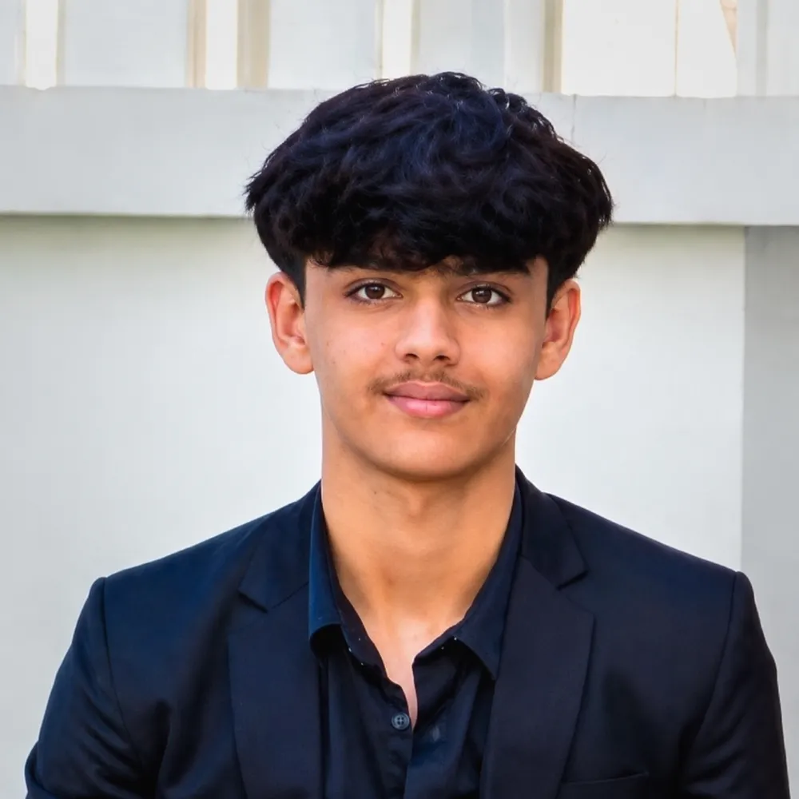
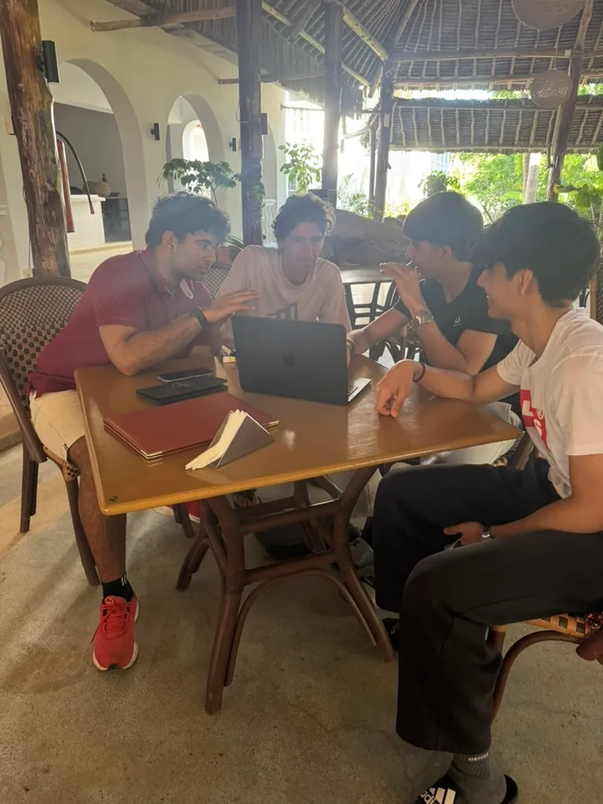
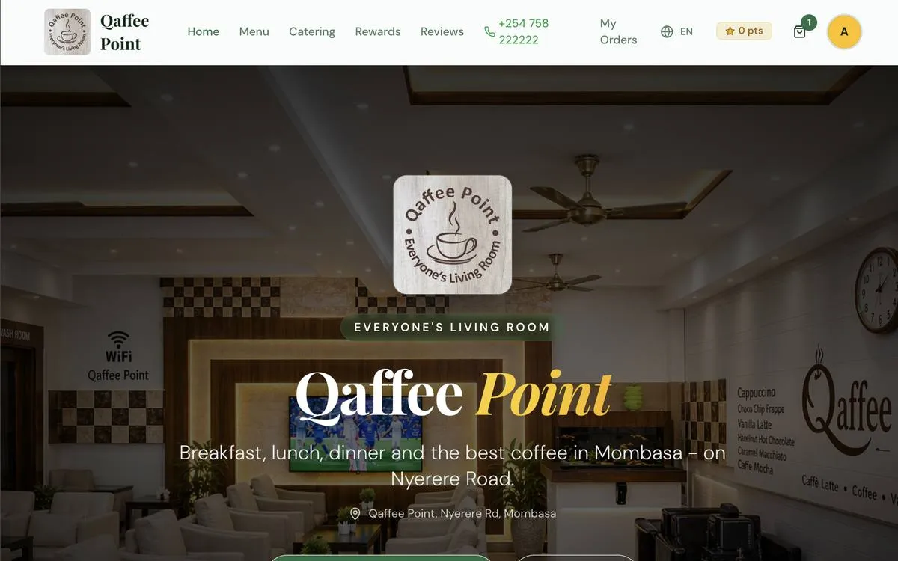
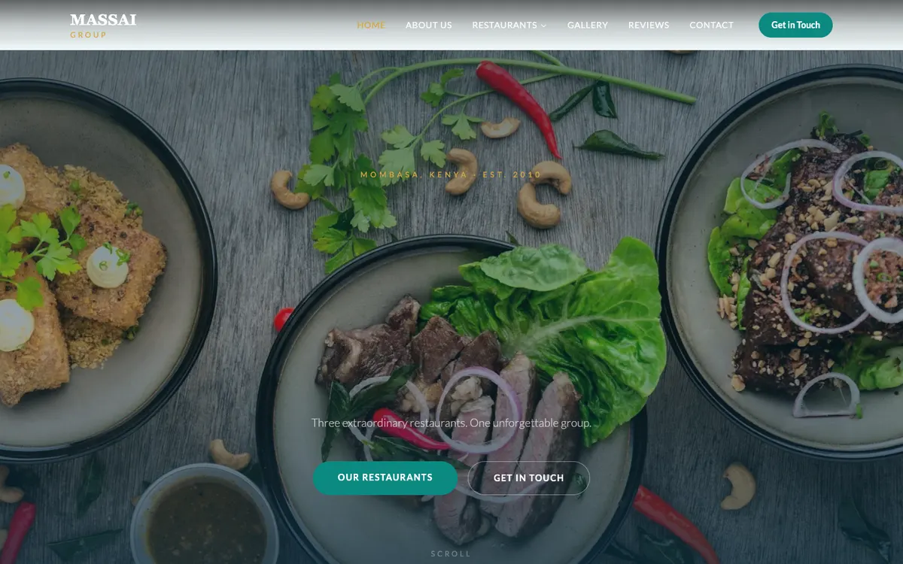
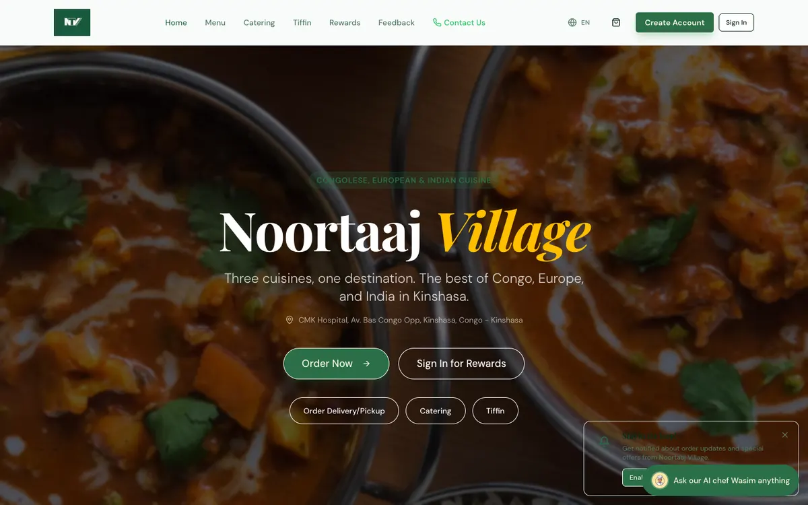
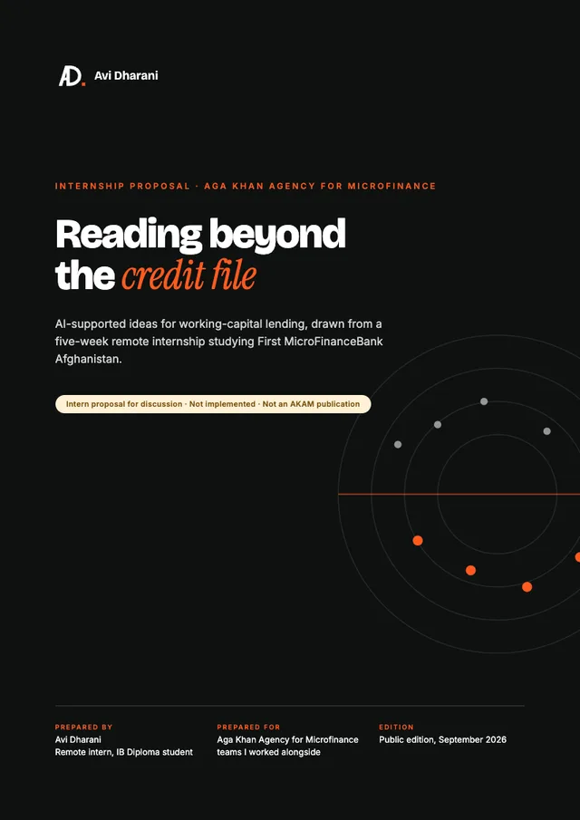
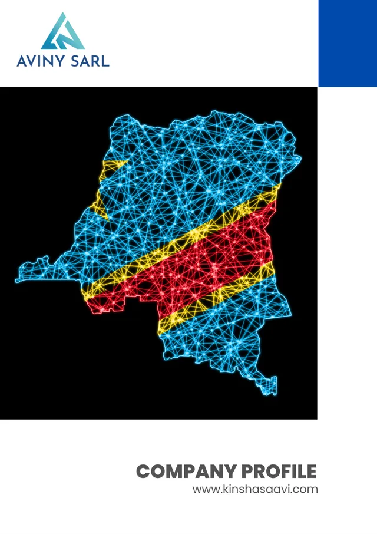

East African Chess Academy
After seeing how many young people played chess in Kinshasa's parks and public spaces, I joined my cousin in creating structured summer coaching. I co-taught and ran the finances.
Mombasa, KenyaIB Diploma · Class of 2027
Currently Co-founder, A&F Ventures Managing Director, EarthPulse Building Fuel2Save Founder, Youth Enterprise Catalyst
I build businesses and digital tools with the people around me: ordering websites for local restaurants, weekly finance sessions for students and a composting programme at school. I care about making useful opportunities easier to reach.

Drag to spin ⟲
01About
I'm Avi, an IB Diploma student in Mombasa whose work spans Kenya and the Democratic Republic of Congo. I co-founded A&F Ventures, which builds ordering websites and digital tools for local businesses. I'm Managing Director of EarthPulse, a student initiative on food-waste education and composting, and I run YEC, weekly sessions on money and enterprise for students at school.
What connects it all is a habit: notice a problem people live with, work out who it affects, then build something small enough to actually finish. Running the finances of a chess academy, selling at a school bazaar and building websites for paying clients taught me to handle budgets, talk to customers and sponsors, and make things other people rely on. I'm most interested in where business, finance and technology meet, and I've recently become curious about private equity as a way to back businesses that matter.

02Journey
Each step taught me something the next one needed: budgeting, then selling, then building, then leading a team.
After seeing how many young people played chess in Kinshasa's parks and public spaces, I joined my cousin in creating structured summer coaching. I co-taught and ran the finances.
Four seven-day programmes for players aged 9 to 16, with instruction, equipment and organised tournaments. Many came back in later years.
Working alongside the finance team of a diversified trading group introduced me to financial reporting and the decisions behind retail, restaurant and catering operations.
I co-led a four-stall operation that made about KES 180,000 in sales, with half of net proceeds going to sustainability initiatives.
I co-founded a digital consultancy building ordering websites, landing pages and digital tools for local businesses.
Weekly sessions where students explore financial literacy, investing and entrepreneurship.
I became Managing Director of a student team of about 20 working on organic waste education and composting.
Workshops on technology, AI and entrepreneurship with an international group, SPCE schools and local communities.
Our team was awarded an IB Global Youth Action Fund grant, and we installed an Aerobin composter at school.
Five weeks studying how a microfinance bank lends working capital to borrowers with no collateral or credit history.
On the finance team, I secured 50% of the funds raised for our school musical.
A startup for drivers' fuel costs, in development, and EarthPulse's recycling app, preparing for launch.
03Ventures & projects
Some are businesses, some are school or community projects. Each one is labelled honestly: running, in development, or finished.
Co-founder · Business strategy and technical delivery
A digital consultancy helping small businesses in Kenya and the DRC adopt technology that fits their everyday needs: custom restaurant ordering websites, marketing landing pages, AI content and digital tools. We have two recurring client relationships alongside one-time projects.
Co-founder · Fuel costs for drivers
A startup being developed to help drivers find participating fuel stations and access fuel deals and rewards. It is aimed first at boda boda and matatu riders, for whom fuel is a daily operating cost, with spending tracking to help them understand what they spend.
Managing Director
A student team of about 20 in Mombasa working on organic waste education and composting, backed by a USD 2,500 IB Global Youth Action Fund grant.
Concept, prototype and website
An app being developed to connect households with recycling partners, coordinate collections and reward eligible recyclable materials.
Founder · YEC
Two-hour weekly sessions where students explore financial literacy, investing and entrepreneurship through learning materials, investment simulations and discussion.
Co-founder, co-instructor and finance lead
Structured summer coaching for about 50 young players aged 9 to 16 across four summers, with equipment and organised tournaments.
Finance team · School production
Sponsorship outreach, budgeting, allocation and licensing for our school musical. I personally secured 50% of the funds raised.
Co-founder · Product and branding
A snack product built with a supplier we met through Zawadi Bazaar: his manufacturing, our product ideas, branding and marketing. The first launch sold about 100 units.
Co-lead · Four-stall school enterprise
I coordinated suppliers, stock, payment systems and sales tracking across four stalls. The operation made about KES 180,000 in sales, and 50% of net proceeds went towards sustainability initiatives.
Participant · Technology, AI and entrepreneurship
With an international group, I helped deliver interactive workshops introducing technology, AI and entrepreneurship to SPCE schools and local communities.
04Live work
The products and initiatives I'm part of, and sites built for clients through A&F Ventures. Every preview is the real, live landing page.
A startup for drivers whose livelihoods depend on fuel, starting with boda boda and matatu riders in Kenya. Drivers find participating stations, access fuel deals and rewards, and track what they spend.
An app connecting households with recycling partners, coordinating collections and rewarding eligible materials. I helped shape the concept and prototype, built its website and worked closely with the app developer.
Our student initiative's home: the composting and waste-education work, the team, events, recognition and our proposal to AKDN for a BINMAN pilot.
Our consultancy's site: the services we offer local businesses, from ordering websites and booking systems to AI content and automation, plus the work we've delivered.
Client work through A&F Ventures

A custom ordering website and backend, giving the restaurant its own direct channel to customers.
Recurring client
One site for three coastal dining destinations, giving each restaurant its own identity under one brand.
View live site ↗
Ordering, catering and rewards for a Kinshasa restaurant serving Congolese, European and Indian food.
View live site ↗An e-commerce storefront concept for an electronics retailer, with product-led pages and marketing reels.
Demo available on request05Sustainability & positive impact
My projects connect interests in business, technology and finance with the communities around me. Whether I am helping a local business manage its own customer relationships, teaching chess or coordinating environmental work, I care about making useful opportunities easier to access and sustain.
Helping small businesses and working people use practical tools to run more independently.
Co-founder · Business strategy and technical delivery
Through A&F Ventures, I help local small businesses adopt technology that fits their everyday needs. Our work includes custom restaurant ordering websites, marketing landing pages, AI content and digital tools. A restaurant client reported that its new ordering system simplified its workflow and reduced reliance on third-party platforms, while giving it a direct customer channel and access to its own customer information. This allows the business to manage customer relationships and offers more independently.
I enjoy translating a business owner's practical difficulties into something useful. I also direct part of my earnings toward learning resources for Youth Enterprise Catalyst, connecting work for local businesses with financial education at school.
Co-founder
Fuel2Save is a startup being developed to help drivers find participating fuel stations and access fuel deals and rewards. Its intended beneficiaries include boda boda and matatu riders, for whom fuel is a recurring operating expense. Spending-tracking features are intended to help users understand their fuel costs and make more informed choices.
I want to explore how a practical business model can support people whose livelihoods depend on transport. The project connects my interests in finance and technology with the everyday cost pressures drivers face.
Co-founder
Waffle Chips grew from a supplier relationship developed through Zawadi Bazaar. We combined the supplier's manufacturing capabilities with our product ideas, branding and marketing to bring a snack product to market. The initial launch sold approximately 100 units, creating a small commercial opportunity through collaboration.
The project helped me see how combining different people's skills can turn an idea into a product.
Co-lead
I co-led a four-stall operation at our school's Zawadi Bazaar, coordinating suppliers, stock, payment systems and sales tracking. The operation generated approximately KES 180,000 in sales, with 50% of net proceeds directed toward sustainability initiatives.
Creating spaces where young people can learn, practise and try things early.
Founder
Through YEC, I help students explore financial literacy, investing and entrepreneurship in weekly two-hour sessions. We use learning materials, investment simulations and discussions to connect financial concepts with practical decisions. Students are encouraged to notice problems around them and consider how a useful business could address them.
I want other students to have opportunities to explore money and enterprise early, ask questions and practise before facing real financial decisions. Part of my earnings from A&F helps fund the learning resources we use.
Co-founder, co-instructor and finance lead
After noticing young people's enthusiasm for chess in Kinshasa's parks, mosques and public spaces, I joined my cousin in creating structured summer coaching. Across four summers, approximately 50 individual participants aged 9 to 16 gained access to instruction, equipment and organised tournaments. Many returned in later years.
We assessed participants' abilities and adapted sessions for different levels, rotating coaching with suitable videos and peer strategy discussions. This gave beginners foundational support while keeping experienced players challenged.
I provided focused support to a talented student who lacked confidence in timed games. He became more comfortable playing with a clock and later achieved success in interschool competition. That experience made the value of individual attention especially meaningful to me.
Programme fees helped cover equipment and practical costs, supporting delivery over four summers: four seven-day programmes of two to three hours a day. Through games and discussion, participants practised considering alternatives, explaining decisions and adapting to setbacks.
Finance team
I helped make our school's production of Into the Woods possible through sponsorship outreach, budgeting, allocation and licensing work. I personally secured 50% of the funds raised, helping support the practical requirements behind a shared creative experience for students and the school community.
This showed me how financial and organisational work can support other people's creativity. My contribution involved making commitments to sponsors and helping turn their support into resources for the production.
Participant
During the GE Summer Programme in Kyrgyzstan, I collaborated with an international group on technology, AI and entrepreneurship activities. We worked with SPCE schools and local communities to deliver interactive workshops introducing these topics.
The experience helped me practise explaining unfamiliar ideas to different audiences and learn from people with different experiences.
Turning concern about waste into things people can do locally.
Managing Director
As Managing Director of EarthPulse, I help coordinate a team of around 20 students working on organic waste education and composting. We combined awareness sessions with a practical activity involving approximately 30 children, helping them understand how separating food waste can turn discarded material into a useful resource. Our work with St. Augustine Secondary, Port Reitz School and Regen Organics connects school learning with community participation and recycling expertise.
We installed an Aerobin at school and began diverting organic food waste into it for composting.
EarthPulse matters to me because it connects an environmental concern with actions people can take locally. My role includes managing resources, coordinating tasks and reporting progress so that our work can continue beyond a single awareness event.
Concept, prototype and website
BINMAN is being developed to connect households with recycling companies, coordinate collections and reward eligible recyclable materials. Its intended benefit is to make waste separation more practical and worthwhile for households while helping recycling partners access recoverable materials. The approach supports a circular economy by connecting discarded resources with opportunities for reuse or processing.
I helped shape the concept and prototype, developed its website and worked closely with the app developer.
06Experience
Two internships: one inside a development finance agency, one inside a trading group's finance team.
Aga Khan Agency for Microfinance (AKAM)
Through a remote internship involving HR, marketing and product teams, I researched organisational challenges and prepared presentations exploring potential AI-supported solutions. The experience strengthened my interest in how financial institutions and technology can respond to practical needs.
My main study was working-capital lending at First MicroFinanceBank Afghanistan: how a lender assesses borrowers who have no collateral, no credit score and no formal financial history. I found that harvest timing, exchange rates and a borrower's reputation often mattered more than anything in the file.

Intern proposal · 6 pages · PDFAviny SARL
Working alongside the finance team at Aviny SARL introduced me to financial reporting and the decisions supporting retail, restaurant and catering operations. I observed how reliable information helps managers understand costs and allocate resources.
Aviny SARL is my family's diversified trading group, incorporated in Kinshasa in 2005, with activities spanning trading and distribution, retail, restaurants and services.

Company profile · 12 pages · PDF07Documents & writing
Proposals, reports and profiles I've written or worked on. Client reports are public editions with pricing removed.
08Recognition, learning & life
The Aga Khan Academy, Mombasa · Class of 2027
Competing at club level in Mombasa since 2024.
Inter-school tournaments and the Congo Olympics in Kinshasa, 2021 to 2024.
Where my first venture started, and still a favourite.
Private equity, public markets and how good businesses are valued.
09Gallery
Projects, ventures, community work and everything in between. Tap any photo to open it.